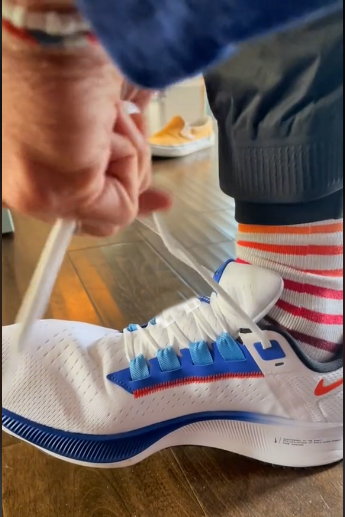

Shoes are your most important piece of running equipment. And one pair of shoes will not support every running condition, meaning you need trail shoes for dirt trails and road shoes for paved paths. You may even need race shoes for race day and training shoes for the runs leading up to an event.
Furthermore, each runner's needs are unique, so a shoe that works for me may not work for you. A "neutral" shoe works well for runners with an evenly centered foot strike. A "stability" shoe works well for runners that roll their foot inward or outward when they strike the ground. Cushioning also plays a role in long-term comfort. Since your shoes support your skeletal structure and protect your joints from pounding the road, it's important to invest in proper footwear. Don't skimp on your shoes!
So how can you get help selecting a shoe? Fleet Feet is a running outfitter with store locations nationwide. They offer personalized fitting services to help you find the right running shoes for you. Check out their article on:
Observe how the tread varies
between trail shoes and road shoes:
Watch this demonstration to see how you can track the mileage on your shoes using the Nike Run Club app.
Listen to Nike Running Global Head Coach Chris Bennett to learn how to tie your shoes the right way.
|  |
|